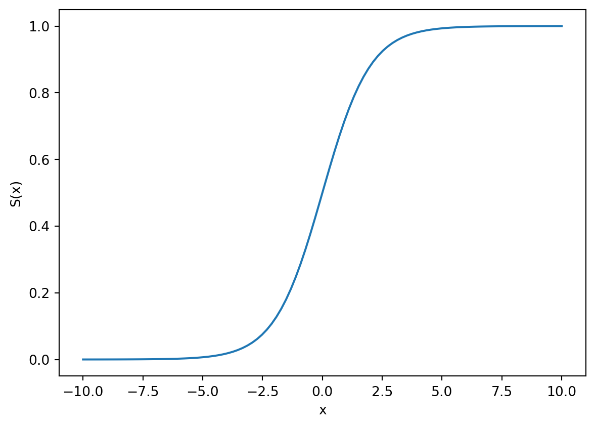
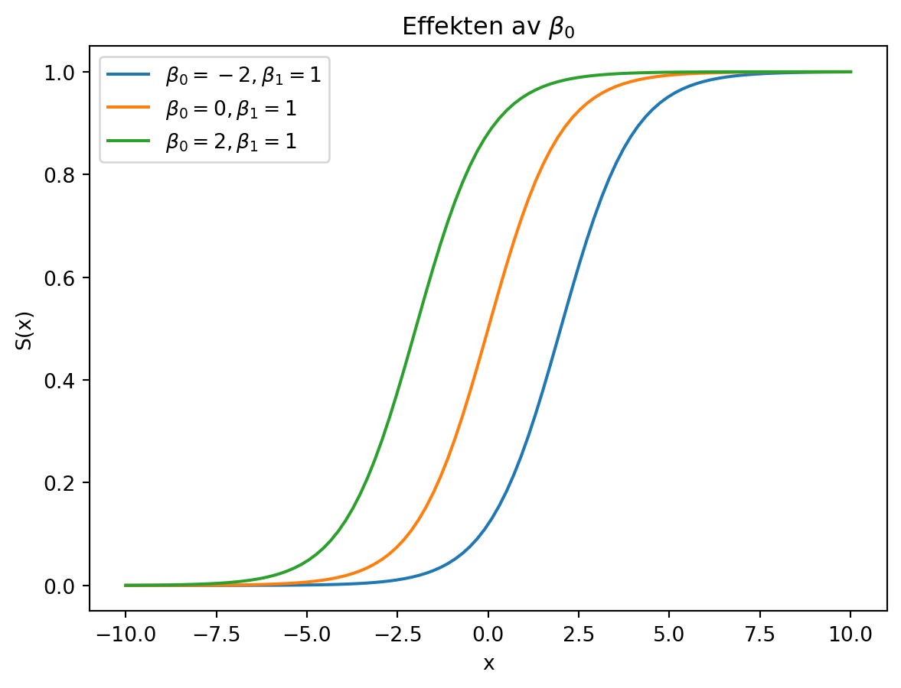
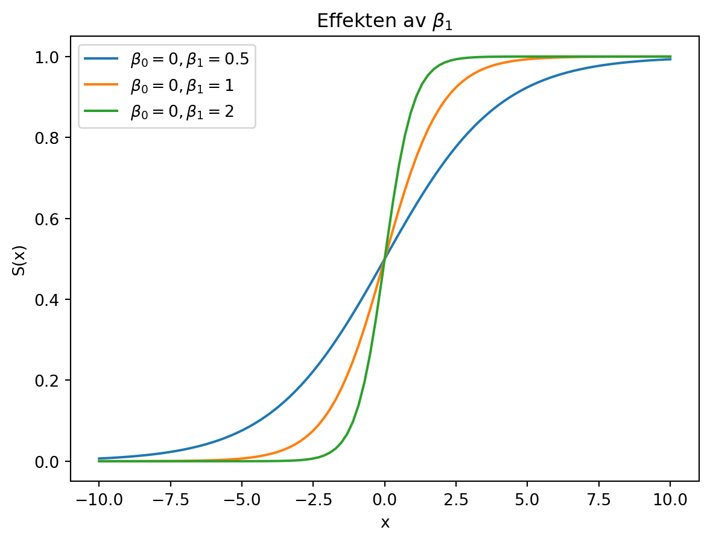
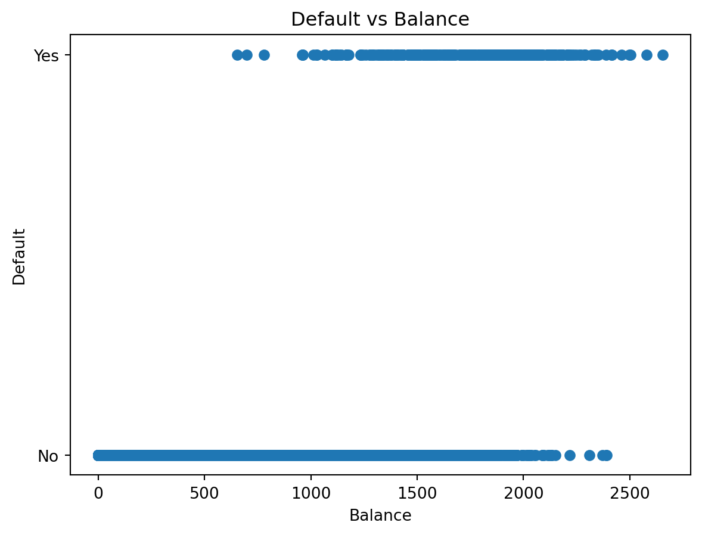

Øvingsoppgave/Tutorial i logistisk regresjon (Gjøres i timen + som øvelse utenom)
Author
Henrik Sveinsson
Tutorial
Vi skal jobbe med denne tutorial-oppgaven i undervisningen, så denne trenger dere ikke gjøre på forhånd. Denne tutorial-oppgaven er også ukens øvingsoppgave, så ikke noen ekstra øvingsoppgaver ut over denne tutorialen.
I leseleksa så dere på logistisk regresjon og på hvordan man kan validere en modell. Dette skal vi nå jobbe med. Vi skal bruke logistisk regresjon til å klassifisere individer som gode eller dårlige betalere av kredittkortregningen sin.
Logistisk regresjon er en klassifiseringsmetode. Det vil si at vi ønsker å predikere kategoriske utfall. Altså utfall slik som kjønn (mann/kvinne), blodtype (A/B/AB/0) osv. Det som kjennetegner slike utfall er at de ikke enkelt kan tilordnes en numerisk verdi på en skala. Det gir ikke mening å si at blodtype B ligger midt mellom A og AB. De er bare forskjellige blodtyper. Noen ganger kan det være uklart om et utfall må være kategorisk eller om det kunne vært numerisk. Det gjelder i tilfeller der vi vet hvordan vi skal sortere kategoriene. I slike tilfeller kan det gi mening å modellere kategoriske utfall som numeriske utfall.
Videoløsning
Her er video med løsning av en tidligere, men ganske lik, versjon av denne tutorial-oppgaven.
Kategorisk vs. numerisk
Hvilke av følgende utfall er kategoriske og hvilke er numeriske?
Temperatur
Navn på by
Vindstyrke
Vindretning
Politisk parti
Øltype
Karakterer
Farge
Kjønn
Løsning:
Kategoriske
Navn på by
Politisk parti (kanskje de kunne sorteres, men usannsynlig)
Øltype (med mindre man kun ser på alkoholprosent)
Karakterer (kanskje, kanskje ikke)
Farge (kommen an på kontekst)
Kjønn
Numeriske
Temperatur
Vindstyrke
Vindretning
Karakterer (vanligvis, man regner jo gjennomsnitt)
Farge (Om man ser på bølgelengden)
Logistisk/sigmoid funksjon
Plott den logistiske funksjonen (s. 139 i ITSL). Hvorfor er denne funksjonen egnet til å predikere et binært kategorisk utfall?
Sigmoidfunksjonen / den logistiske funsjonen er \(p(x) = \frac{e^{\beta_0 + \beta_1 x}}{1+e^{\beta_0 + \beta_1 x}}\)
Denne funksjonen er godt egnet til å beregne binære utfall fordi den er begrenset til intervallet 0 til 1. Vi kan tolke estimatet som en sannsynlighet for det ene av utfallene.
import numpy as npimport matplotlib.pyplot as pltdef logistisk(x, beta_0=0, beta_1=1): z = beta_0 + beta_1*xreturn np.exp(z) / (1+ np.exp(z))x = np.linspace(-10, 10, 100)y = logistisk(x)plt.plot(x, y)plt.xlabel('x')plt.ylabel('S(x)')plt.show()

Parametrene \(\beta_0\) og \(\beta_1\)
Uforsk hvordan parametrene \(\beta_0\) og \(\beta_1\) flytter på funksjonen.
x = np.linspace(-10, 10, 100)beta_1 =1# Utforsk effekten av beta_0for beta_0 in [-2, 0, 2]: y = logistisk(x, beta_0=beta_0, beta_1=beta_1) plt.plot(x, y, label=rf'$\beta_0={beta_0}, \beta_1={beta_1}$')plt.xlabel('x')plt.ylabel('S(x)')plt.legend()plt.title(r'Effekten av $\beta_0$')plt.show()beta_0=0# Utforsk effekten av beta_1for beta_1 in [0.5, 1, 2]: y = logistisk(x, beta_0=beta_0, beta_1=beta_1) plt.plot(x, y, label=rf'$\beta_0={beta_0}, \beta_1={beta_1}$')plt.xlabel('x')plt.ylabel('S(x)')plt.legend()plt.title(r'Effekten av $\beta_1$')plt.show()


Datasett med kredittkortmislighold
Last inn default-datasettet (zenodo.org/record/6199560/files/default.csv). Plott mislighold mot hvor mye kredittkortlån en person har (balance). Ser du noen sammenheng i dataene?
Litt starthjelp her:
import pandas as pd# Load the dataseturl ='https://zenodo.org/record/6199560/files/default.csv'data = pd.read_csv(url)
# Plot default vs balanceplt.scatter(data['balance'], data['default'])plt.xlabel('Balance')plt.ylabel('Default')plt.title('Default vs Balance')plt.show()

Datavisualisering
Bruk funksjonen np.histogram til å lage et histogram over hvem som misligholder og ikke. Bruk deretter histogramverdiene til å regne ut hvor stor andel som misligholder kridittkortlånene innenfor hvert intervall av balance. Altså for hvert intervall i histogrammet.
Vi kan hente ut arrayer med true/false på mislighold på denne måten:
Et hovedpoeng her er å se at data som er “ja”/“nei” kan konverteres til sannsynligheter for “ja”/“nei” om vi lager et histogram over “ja”/“nei”.
Tilpasse \(\beta_0\) og \(\beta_1\)
Prøv å finne gode verdier for parametrene \(\beta_0\) og \(\beta_1\) slik at du får tegnet en logistisk funksjon som følger dataene brukbart. Trenger ikke å fintune helt, bare finne en strek som er sånn noen lunde på rett sted.
Vi prøver oss fram. Lista viser en rekke med forsøk inn mot noenlunde gode verdier
beta_verdier= [[-2000, 1], [-100, 0.05], [-10, 0.005], [-10, 0.007], [-12, 0.006], [-13, 0.0067]]plt.plot(midpoints, hist_yes/(hist_yes + hist_no))for beta_0, beta_1 in beta_verdier:print(beta_0, beta_1) y = logistisk(midpoints, beta_0=beta_0, beta_1=beta_1) plt.plot(midpoints, y, label=rf"$\beta_0={beta_0}, \beta_1={beta_1}$")plt.legend()
Bruk scikit-learn sin metode for å gjøre logistisk regresjon for mislighold som funsjon av balansen på kredittkortet.
Litt kode til å komme i gang:
from sklearn.linear_model import LogisticRegressionmy_regressor = LogisticRegression()my_fit = my_regressor.fit(x.reshape(-1,1), y.reshape(-1,1))
Men sett inn riktige tall! Det kjipeste med koden over er at LogisticRegressionsin fit-funksjon forventer å få en array med potensielt flere prediktorer, ikke bare én (som her er “balance”). Derfor vil den ha en array med arrayer, og vi må gjøre .reshape for å lage en array med arrayer av lengde 1. Det er som å pakke bamsemums i cellofan før de går i godteposen.
Om tilpasningen har gått riktig, vil du nå kunne finne igjen \(\beta_0\) og \(\beta_1\) som henholdsvis my_regressor.intercept_ og my_regressor.coef_.
Plott deretter den logistiske funksjonen sammen med grafen som viser andel “yes” for å verifisere at du har fått riktige koeffisienter.
Skriv også opp, med tall, hva som er likningen som beskriver modellen din for mislighold av kredittkortgjeld.
Går det an å si noe vettugt om verdien på koeffisientene opp mot hva vi ser i plottet?
Multippel logistisk regresjon
Til nå har vi tenkt av vi modellerer sannsynligheten for å misligholde kun som en funksjon av én forklaringsvariabel \(x_1\), som er hvor stor kredittkortgjeld en person har. \[f(x) = \frac{e^{\beta_0 + \beta_1 x_1}}{1 + e^{\beta_0 + \beta_1 x_1}}\]
Vi skal nå utvide til også å ta med on den som har kredittkortet er student eller ikke: